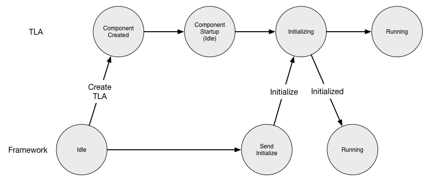

Component Handlers
A component developer creates a Top Level Actor (TLA) by inheriting from an abstract class ComponentHandlers or JComponentHandlers for Scala or Java, respectively. Each of these abstract classes provides several handler methods that can be overridden by the developer to provide component-specific code as described below.
Component Lifecycle
For each component, the CSW framework creates a Supervisor that creates the TLA, and along with the abstract behavior class provided by the framework, it starts up and intiailizes the component in a standardized way. At the conclusion of the startup of the component, it is ready to receive commands from the outside world. The following figure is used to describe the startup lifecycle interactions between the framework and the TLA.

As described in Creating a Component, in either standalone or when running within a container, a Supervisor is created with a ComponentInfo file. The figure shows that the Supervisor in the framework creates the specified TLA. Once the TLA is created, the framework calls the initialize handler. This is the oportunity for the component to perform initialization needed before it is ready to receive commands.
The TLA indicates a successful initialize by returning. If it cannot initialize, it can throw an exception, which will be caught and logged. The Supervisor will retry the creation and initialization of the TLA three times. If it fails after three times processing stops.
After failing to create and initialize three times, the Supervisor will log a message and stop. In the future when the Alarm Service exists, there will probably be an alarm that will be set to notify the operator of a failure since there is serious problem.
When initialize succeeds, the Supervisor in the framework and the component itself enter the Running state. When in the Running state, commands received from outside the component are passed to the TLA (see below).
initialize
The initialize handler is invoked when the component is created. This is different than constructor initialization to allow non-blocking asynchronous operations. The component can initialize state such as configuration to be fetched from Configuration Service, location of components or services to be fetched from Location Service etc. These vary from component to component.
- Assembly/Scala
-
override def initialize(): Future[Unit] = async { // Initialization could include following steps : // 1. fetch config (preferably from configuration service) val calculationConfig = await(getAssemblyConfig) // 2. create a worker actor which is used by this assembly val worker: ActorRef[WorkerActorMsg] = ctx.spawnAnonymous(WorkerActor.make(calculationConfig)) // 3. find a Hcd connection from the connections provided in componentInfo val maybeConnection = componentInfo.connections.find(connection ⇒ connection.componentId.componentType == ComponentType.HCD) // 4. If an Hcd is found as a connection, resolve its location from location service and create other // required worker actors required by this assembly maybeConnection match { case Some(_) ⇒ resolveHcd().map { case Some(hcd) ⇒ runningHcds = runningHcds.updated(maybeConnection.get, Some(new CommandService(hcd)(ctx.system))) diagnosticsPublisher = ctx.spawnAnonymous(DiagnosticsPublisher.make(runningHcds(maybeConnection.get).get, worker)) commandHandler = ctx.spawnAnonymous(CommandHandler.make(calculationConfig, runningHcds(maybeConnection.get))) case None ⇒ // do something } case None ⇒ Future.successful(Unit) } } - Assembly/Java
-
@Override public CompletableFuture<Void> jInitialize() { // fetch config (preferably from configuration service) CompletableFuture<ConfigData> configDataCompletableFuture = getAssemblyConfig(); // create a worker actor which is used by this assembly CompletableFuture<ActorRef<WorkerActorMsg>> worker = configDataCompletableFuture.thenApply(config -> ctx.spawnAnonymous(WorkerActor.make(config))); // find a Hcd connection from the connections provided in componentInfo Optional<Connection> mayBeConnection = componentInfo.getConnections().stream() .filter(connection -> connection.componentId().componentType() == JComponentType.HCD) .findFirst(); // If an Hcd is found as a connection, resolve its location from location service and create other return mayBeConnection.map(connection -> worker.thenAcceptBoth(resolveHcd(), (workerActor, hcdLocation) -> { if (!hcdLocation.isPresent()) throw new HcdNotFoundException(); else { runningHcds.put(connection, Optional.of(new JCommandService(hcdLocation.get(), ctx.getSystem()))); } diagnosticPublisher = ctx.spawnAnonymous(JDiagnosticsPublisherFactory.make(new JCommandService(hcdLocation.get(), ctx.getSystem()), workerActor)); })).get(); } - Hcd/Scala
-
override def initialize(): Future[Unit] = async { // fetch config (preferably from configuration service) val hcdConfig = await(getHcdConfig) // create a worker actor which is used by this hcd val worker: ActorRef[WorkerActorMsg] = ctx.spawnAnonymous(WorkerActor.make(hcdConfig)) // initialise some state by using the worker actor created above current = await(worker ? InitialState) stats = await(worker ? GetStatistics) } - Hcd/Java
-
@Override public CompletableFuture<Void> jInitialize() { // fetch config (preferably from configuration service) getConfig().thenAccept(config -> hcdConfig = config); // create a worker actor which is used by this hcd worker = ctx.spawnAnonymous(WorkerActor.make(hcdConfig)); // initialise some state by using the worker actor created above CompletionStage<Integer> askCurrent = AskPattern.ask(worker, WorkerActorMsgs.JInitialState::new, new Timeout(5, TimeUnit.SECONDS), ctx.getSystem().scheduler()); CompletableFuture<Void> currentFuture = askCurrent.thenAccept(c -> current = c).toCompletableFuture(); CompletionStage<Integer> askStats = AskPattern.ask(worker, WorkerActorMsgs.JInitialState::new, new Timeout(5, TimeUnit.SECONDS), ctx.getSystem().scheduler()); CompletableFuture<Void> statsFuture = askStats.thenAccept(s -> stats = s).toCompletableFuture(); return CompletableFuture.allOf(currentFuture, statsFuture); }
Creation Timeout
The Supervisor waits for the initialize to complete. If it times out, it will retry the creation of the TLA 3 times in the same way as with initialize failures. The timeout value is configurable by the TLA by setting the initializeTimeout value in ComponentInfo.
Location Service Interactions
Once the Supervisor and TLA are in the Running state, the Supervisor registers the component with the Location Service. This allows the component to be located so it can be contacted. Registration with Location Service happens only if locationServiceUsage in ComponentInfo is not set to DoNotRegister.
If the component has connections and locationServiceUsage in ComponentInfo is set to RegisterAndTrackServices, the framework will resolve the components and deliver TrackingEvents to the TLA through the onTrackingEvent onTrackingEvent handler.
Shutting Down
A component may be shutdown by an external administrative program whether it is deployed in a container or standalone. Shutting down may occur when the component is Running/onLine or offLine (see below).
The TLA provides a handler called onShutdown that is called by the Supervisor when shutting down to give the TLA an opportunity to perform any clean up it may require such as freeing resources.
As with initialize the framework will only wait for 10 seconds for the component to return from doShutdown. If it does not return, it is assumed the TLA is damaged. After successful return from doShutdown, the Supervisor deletes the component. The doShutdown timeout cannot be changed.
onShutdown
The onShutdown handler can be used for carrying out the tasks which will allow the component to shutdown gracefully.
- Assembly/Scala
-
override def onShutdown(): Future[Unit] = async { // clean up resources } - Assembly/Java
-
@Override public CompletableFuture<Void> jOnShutdown() { // clean up resources return new CompletableFuture<>(); } - Hcd/Scala
-
override def onShutdown(): Future[Unit] = async { // clean up resources } - Hcd/Java
-
@Override public CompletableFuture<Void> jOnShutdown() { return CompletableFuture.runAsync(() -> { // clean up resources }); }
Restarting
A component may be restarted by an external administrative program whether it is deployed in a container or standalone. A restart may occur when the component is Running/onLine or offLine (see below).
A restart causes the component to be destroyed and re-created with a new TLA. The onShutdown handler is called to allow the component to tidy up before it is destroyed. Then the Supervisor creates a new TLA and the startup proceeds as with initialize above.
Component Online and Offline
Online describes a component that is currently part of the observing system that is in use. When a component enters the Running state it is also “online”.
A component is offline when it is operating and available for active observing but is not currently in use.
If a component is to transition from the online state to the offline state, the onGoOffLine handler is called. The component should make any changes in its operation for offline use.
If a component is to transition from the offline state to the online state, the onGoOnline handler is called. The component should make any changes in its operation needed for online use.
isOnline
A component has access to the isOnline boolean flag, which can be used to determine if the component is in the online or offline state.
onGoOffline
A component can be notified to run in offline mode in case it is not in use. The component can change its behavior if needed as a part of this handler.
- Assembly/Scala
-
override def onGoOffline(): Unit = { // do something when going offline } - Assembly/Java
-
@Override public void onGoOffline() { // do something when going offline } - Hcd/Scala
-
override def onGoOffline(): Unit = { // do something when going offline } - Hcd/Java
-
@Override public void onGoOffline() { // do something when going offline }
onGoOnline
A component can be notified to run in online mode again in case it was put to run in offline mode. The component can change its behavior if needed as a part of this handler.
- Assembly/Scala
-
override def onGoOnline(): Unit = { // do something when going online } - Assembly/Java
-
@Override public void onGoOnline() { // do something when going online } - Hcd/Scala
-
override def onGoOnline(): Unit = { // do something when going online } - Hcd/Java
-
@Override public void onGoOnline() { // do something when going online }
Handling commands
The remaining handlers are associated with handling incoming commands. There is a handler for submit commands called onSubmit and a handler for oneway called onOneway.
validateCommand
Whenever a command is received by a component it is first validated. The component should inspect the command and its parameters to determine if the actions related to the command can be executed or started.
A command can be sent as a Submit or Oneway message to the component. If a command can be completed immediately, a CommandResponse indicating the final response for the command can be returned. If a command requires time for processing, the component is required to validate the ControlCommand received and return a validation result as Accepted or Invalid. The final response for a command sent as Submit can be obtained by the sender command by querying or subscribing for this response to the component as described here.
- Assembly/Scala
-
override def validateCommand(controlCommand: ControlCommand): CommandResponse = controlCommand match { case _: Setup ⇒ Accepted(controlCommand.runId) // validation for setup goes here case _: Observe ⇒ Accepted(controlCommand.runId) // validation for observe goes here } - Assembly/Java
-
@Override public CommandResponse validateCommand(ControlCommand controlCommand) { if (controlCommand instanceof Setup) { // validation for setup goes here // after validation of the controlCommand, update its status of successful validation as Accepted CommandResponse.Accepted accepted = new CommandResponse.Accepted(controlCommand.runId()); commandResponseManager.addOrUpdateCommand(controlCommand.runId(), accepted); return new CommandResponse.Accepted(controlCommand.runId()); } else if (controlCommand instanceof Observe) { // validation for observe goes here return new CommandResponse.Accepted(controlCommand.runId()); } else { return new CommandResponse.Invalid(controlCommand.runId(), new CommandIssue.AssemblyBusyIssue("Command not supported")); } } - Hcd/Scala
-
override def validateCommand(controlCommand: ControlCommand): CommandResponse = controlCommand match { case _: Setup ⇒ Accepted(controlCommand.runId) // validation for setup goes here case _: Observe ⇒ Accepted(controlCommand.runId) // validation for observe goes here } - Hcd/Java
-
@Override public CommandResponse validateCommand(ControlCommand controlCommand) { if (controlCommand instanceof Setup) { // validation for setup goes here return new CommandResponse.Accepted(controlCommand.runId()); } else if (controlCommand instanceof Observe) { // validation for observe goes here return new CommandResponse.Accepted(controlCommand.runId()); } else { return new CommandResponse.CommandNotAvailable(controlCommand.runId()); } }
If a response can be provided immediately, a final CommandResponse such as CommandCompleted or Error can be sent from this handler.
onSubmit
On receiving a command as Submit, the onSubmit handler is invoked for a component only if the validateCommand handler returns Accepted. In case a command is received as a submit, the command response should be updated in the CommandResponseManager, which is an actor (A reference to it is passed to the component handler constructor).
- Assembly/Scala
-
override def onSubmit(controlCommand: ControlCommand): Unit = controlCommand match { case setup: Setup ⇒ submitSetup(setup) // includes logic to handle Submit with Setup config command case observe: Observe ⇒ submitObserve(observe) // includes logic to handle Submit with Observe config command } - Assembly/Java
-
@Override public void onSubmit(ControlCommand controlCommand) { if (controlCommand instanceof Setup) submitSetup((Setup) controlCommand); // includes logic to handle Submit with Setup config command else if (controlCommand instanceof Observe) submitObserve((Observe) controlCommand); // includes logic to handle Submit with Observe config command } - Hcd/Scala
-
override def onSubmit(controlCommand: ControlCommand): Unit = controlCommand match { case setup: Setup ⇒ submitSetup(setup) // includes logic to handle Submit with Setup config command case observe: Observe ⇒ submitObserve(observe) // includes logic to handle Submit with Observe config command } - Hcd/Java
-
@Override public void onSubmit(ControlCommand controlCommand) { if (controlCommand instanceof Setup) submitSetup((Setup) controlCommand); // includes logic to handle Submit with Setup config command else if (controlCommand instanceof Observe) submitObserve((Observe) controlCommand); // includes logic to handle Submit with Observe config command }
onOneway
On receiving a command as Oneway, the onOneway handler is invoked for a component only if the validateCommand handler returns Accepted.In case a command is received as a oneway, command response should not be provided to the sender.
- Assembly/Scala
-
override def onOneway(controlCommand: ControlCommand): Unit = controlCommand match { case setup: Setup ⇒ onewaySetup(setup) // includes logic to handle Oneway with Setup config command case observe: Observe ⇒ onewayObserve(observe) // includes logic to handle Oneway with Observe config command } - Assembly/Java
-
@Override public void onOneway(ControlCommand controlCommand) { if (controlCommand instanceof Setup) onewaySetup((Setup) controlCommand); // includes logic to handle Oneway with Setup config command else if (controlCommand instanceof Observe) onewayObserve((Observe) controlCommand); // includes logic to handle Oneway with Observe config command } - Hcd/Scala
-
override def onOneway(controlCommand: ControlCommand): Unit = controlCommand match { case setup: Setup ⇒ onewaySetup(setup) // includes logic to handle Oneway with Setup config command case observe: Observe ⇒ onewayObserve(observe) // includes logic to handle Oneway with Setup config command } - Hcd/Java
-
@Override public void onOneway(ControlCommand controlCommand) { if (controlCommand instanceof Setup) onewaySetup((Setup) controlCommand); // includes logic to handle Oneway with Setup config command else if (controlCommand instanceof Observe) onewayObserve((Observe) controlCommand); // includes logic to handle Oneway with Observe config command }